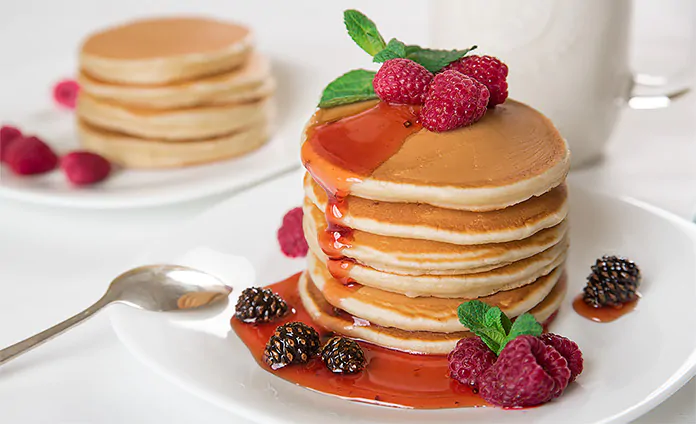

How to cook pancakes

Pancakes are soft, fluffy cakes cooked on a griddle or frying pan. They are a breakfast classic and can be served with butter, syrup, fruits, or chocolate. This recipe will help you make traditional American-style pancakes.
Ingredients
- 1 cup all-purpose flour
- 2 tablespoons sugar
- 1 tablespoon baking powder
- A pinch of salt
- 1 cup milk
- 1 egg
- 2 tablespoons melted butter
Steps
- In a bowl, mix flour, sugar, baking powder, and salt.
- In another bowl, whisk together milk, egg, and melted butter.
- Combine the wet and dry ingredients; stir until smooth.
- Heat a lightly oiled pan over medium heat.
- Pour batter into the pan to form pancakes.
- Cook until bubbles form on the surface, then flip and cook until golden.
- Serve hot with syrup, butter, or your favorite toppings.
Home